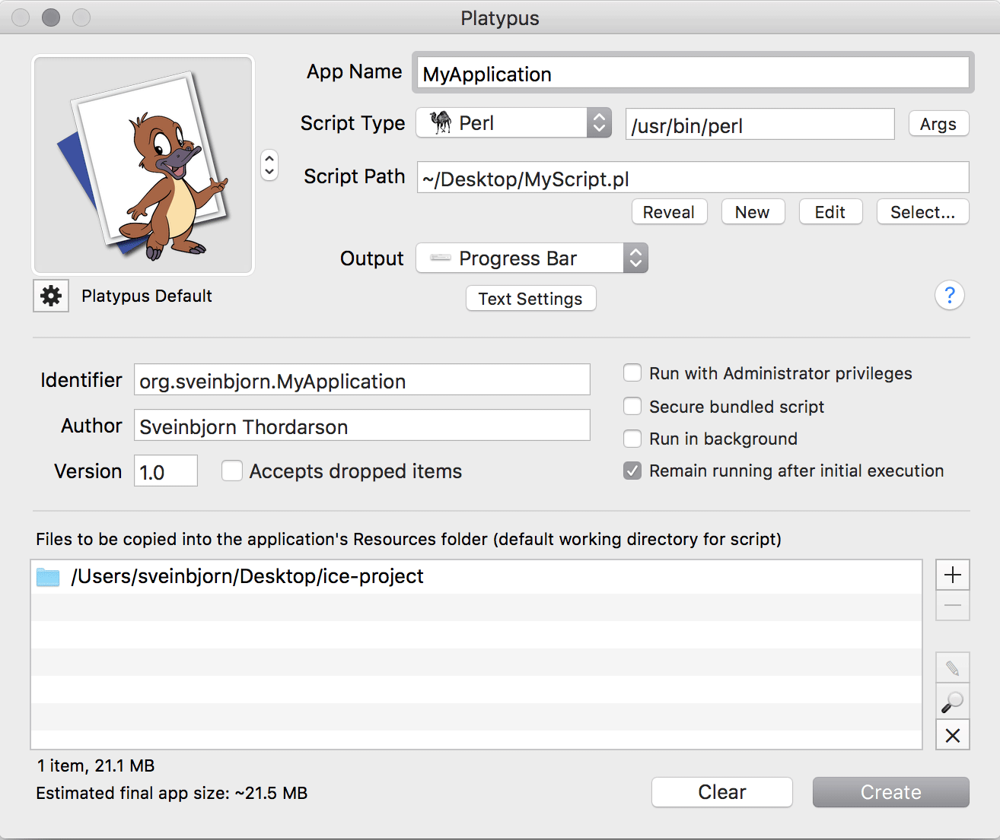
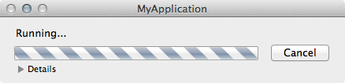
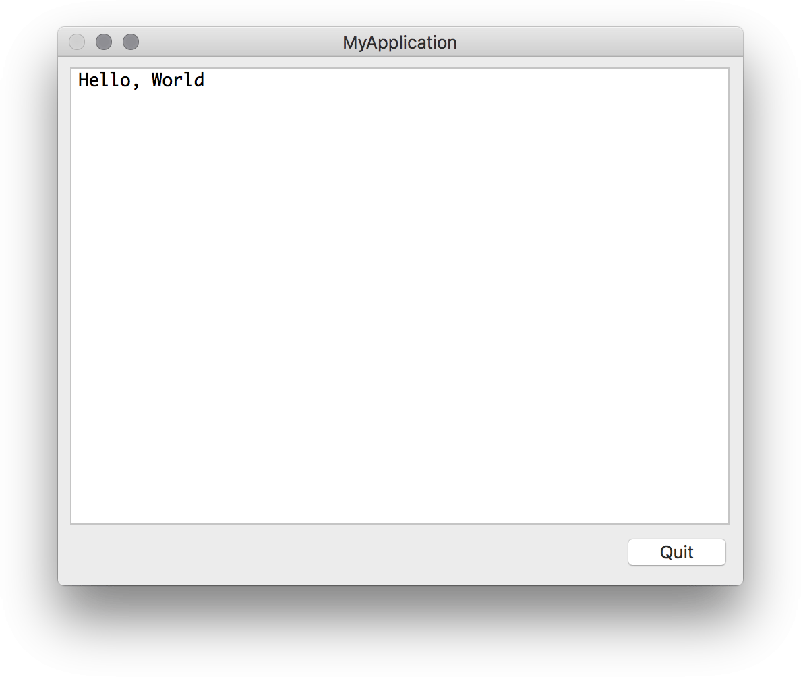
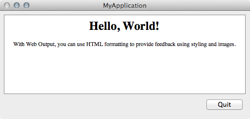
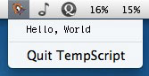
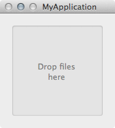
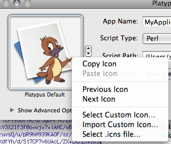
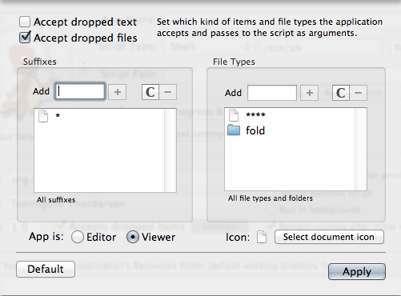
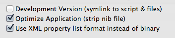
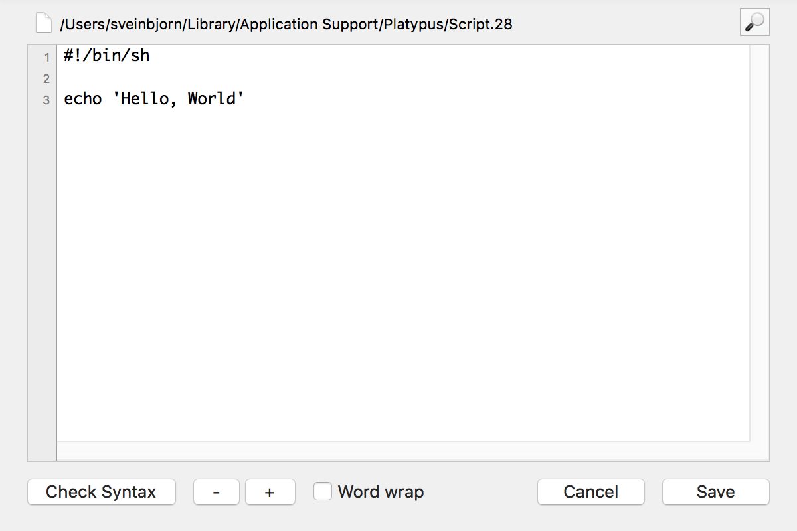

For version 4.7. The latest version of this document can be found here.
Last updated on the 27th of February 2012, by Sveinbjorn Thordarson
Platypus is a Mac OS X developer tool which allows you to create application wrappers around scripts. This means that your scripts can be launched from the Mac OS X window environment -- e.g. the Finder or the Dock -- without requiring use of the command line interface. Your scripts effectively become regular Mac OS X applications.
Platypus was first conceived in 2003 and implemented using the Carbon APIs. It has since gone through over a dozen major updates, and is now entirely written in Objective C for the Cocoa APIs.
Platypus is free, open-source software distributed under the terms and conditions of the Free Software Foundation's GNU General Public License. This means the source code is freely available and you are free to modify and distribute it as you see fit, as long as it remains open. For more information on licensing, see Can I use Platypus to create proprietary software?.
While Platypus is free, it is the product of hundreds of hours of work over the span of several years. If you find Platypus a useful, please consider making a donation to support further development. I rely on donations to encourage me in continuing development of Platypus.
That being said, while I am happy to respond to feature requests, bug reports and questions concerning Platypus which are not addressed in this document, I will not respond to queries about scripting and scripting languages. Productive use of Platypus assumes that you are competent in your scripting language of choice. I am obliged to note this due to the large number of queries I have received over the years about scripting languages and their use. I simply do not have the time or expertise to respond to such queries. There are plenty of good tutorials for most scripting languages freely available online. Then there's always Stack Overflow.
Platypus was conceived and created, and is currently maintained and developed by me, Sveinbjorn Thordarson <sveinbjornt@gmail.com>
The Platypus icon -- Hexley, the Darwin mascot -- was created by Jon Hooper, who was kind enough to grant me permission to use it as the Platypus application icon. Derivative icons using Hexley were created by Sveinbjorn Thordarson.
Thanks go to Troy Stephens, author of the IconFamily class used for icon handling in Platypus, Uli Kusterer author of UKKQueue, Gianni Ceccarelli for contributing code on authenticated script execution, Matt Gallagher for secure temp file code, Andy Matuschak for the Sparkle update framework, and the Adium developers for various code bits. The OmniGroup Mac OS X Development mailing list has also been invaluable over the years.
Finally, I am much indebted to Wilfredo Sanchez, author of DropScript, the proof-of-concept project that inspired me to create Platypus in the first place.
Regular Mac OS X applications are bundles -- special folders with a directory structure within which a binary is stored, along with resources, configuration files and property lists. Platypus creates applications with a special binary that launches a specified script and captures its output. It can present this output in a number of ways, for example with a progress bar, a text view or a WebKit-based web view.
Platypus is not a set of bindings between the Mac OS X APIs and scripting languages. It is not, in other words, a full development environment for Mac OS X and is not intended to be used to create substantial Mac OS X applications with complex user interaction. If you want to create advanced Mac OS X applications, you should learn to program with Objective C and the wonderful Cocoa APIs. Platypus is not and never will be a substitute for learning to use the excellent native application programming interfaces.
That being said, you may be able to add some interactive GUI elements using CocoaDialog or Pashua.
As of version 4.5, both the Platypus application and the applications it generates require Mac OS X 10.5 or later and are provided as 32-bit/64-bit fat Intel only binaries. If you want to target 10.4 and PowerPC users, you can use version 4.4, which continues to work just fine on older systems.
The basic Platypus interface is pretty straightforward. As soon as you launch the Platypus application, you will see a window like this:
Open your favorite text editor, write the script you want to create an application from and save it. Then find your script in the Finder and drag it on the Platypus window, or, alternately, press the "Select.." button and locate it via navigation dialog. Now it's time to configure the application. The basic interface allows you to set the following things:
App NameHere you type in the name of the application you are about to create. Once you press the "Create" button, you will be prompted again for a name for your app. However, that will only be the name of the actual application bundle directory, so make sure you put in the proper application name here.
Script PathThis field contains the path to the script you will create the app from. You either define this manually by typing the path into the text field (which supports shell-style autocomplete), or by pressing the Select button and selecting it in a navigation dialog or by dragging your script on to the Platypus window.
Once you have selected a valid script, you can press the Edit button to open it in your default text editor. Platypus includes a very basic built-in text editor as the default editor. You can change this in the Preferences to use any external editor you want.
You can also press the New button. This will create a text file for you in Platypus' Application Support folder and open it in your default editor. The Reveal button reveals the script file in the Finder.
Depending on the scripting language you use, you will want to select the appropriate kind here. You can either select one of the predefined scripting languages from the the pop-up menu or type in the path to an interpreter of your own choice in the field next to the pop-up menu.
Most of the time, you will not need to specify this manually. When you select a script file, Platypus will automatically try to determine what kind of script it is by looking at the file suffix and shebang (#!) line. If you have specified this meta-data in the script file itself, Platypus is smart enough to figure it out.
Please note that the interpreter you selected must exist on the Mac OS X system on which your script application will run. All the preset scripting language interpreters (e.g. shell, Perl, Python, PHP, Tcl, Expect etc.) are a standard part of all Mac OS X installations.Alternately, you could use /usr/bin/env.
The Args button next to the text field containing your script interpreter setting allows you to specify arguments for the script interpreter and the script itself.
The Output pop-up button allows you to select what the application you create will do with the output of the Script. There are four settings available:
None: Your application will provide no graphical feedback whatsoever. The application will just launch in the Dock and execute the script without opening any windows. All script output will go to STDOUT and STDERR, viewable in Console.app.
Progress Bar: A small window with an indeterminate progress bar and a "Cancel" button will appear during the execution of the script. Script output is fed line by line into the status message above the progress bar. A small arrow to with a "Show details" option will reveal a small text field containing all script output.
It is worth noting that the script can communicate with the progress bar and notify it of script progress. All lines of script output with the format 'PROGRESS:\d+' (e.g. PROGRESS:75) will be interpreted as setting the completion percentage of the task.
Text Window: A window with a text field will be displayed. This text field receives all script output. Please note that this text field is not an interactive terminal session, and cannot receive any input from the user. It does not support any terminal buffering or commands and cannot be used to display ncurses-based interfaces. It just displays the actual text output of the script as it is being executed. The properties of the text field can be modified in Platypus by pressing the "Text Settings" button. This will present an interface pane in which text encoding, font, color and size can be set.
Web View: Web View output means that the output from your script will be interpreted as HTML and passed on to a WebView in the output window -- i.e. an instance of the WebKit rendering engine used in Safari. This allows you to use HTML formatting and web technologies/markup to provide feedback on script execution.
The base directory for the browser instance is the application bundle's Resources directory, so you can bundle images and other support files by adding them to the Bundled Files list and referencing them relative to the directory.
Status Menu: Status Menu output is slightly different from the other output modes. Your Platypus-generated application will create a Status Item in the menu bar. Every time the status item is clicked, your script will be executed and the text output displayed line for line as menu items.
It is worth noting that Tapir allows for more sophisticated development of Status Items that display script output.
Droplet: Creates a square window instructing the user to drop files on it for processing. While processing, script output will be displayed line for line within the box along with an indeterminate circular progress indicator.
PLEASE NOTE: Make sure you flush the output to ensure it is displayed in real-time while the script is running. For Perl, see buffering. See also My script's output isn't being shown until the script is done in the FAQ.
Platypus allows you to set an icon for your application. You can loop through the Platypus icon presets for your application or, alternately, drag an image or icon file for a custom icon. There are also two menu items in the "Advanced" menu, "Select Custom Icon..." and "Import Custom Icon...", which allow you to select either an image to use as icon, or specify a file whose icon is to be used. The app icon box has a contextual menu which gives easy access to these functions, allowing you to paste an icon from the clipboard. It is also worth mentioning that you can choose the option "Select .icns file", to bypass Platypus' processing of images and copy a given .icns file directly to the application bundle.
Please note that having Platypus create the icon file will not result in an icon that looks good in smaller sizes. For best results, use professional Mac OS X icon-editing software and specify a carefully crafted .icns file with the "Select .icns file" option.
The Author and Version fields allow you to specify just that: the name of the author of your script application and its version. This will default to the full name associated with your user account, and version 1.0. This information will appear in the "Get Info" window for your application in the Finder, and in the window that appears when users selected "About this application" in the Application menu of the app.
The Identifier text field allows you to set the unique identifier for your application. If you have typed in a name for your application, the "Identifier" text field will contain something like "org.username.YourAppName". Every Mac OS X application has a unique string called a bundle identifier, which is in the form of a reverse DNS name (i.e. "com.apple.iTunes", "org.sveinbjorn.Platypus"). Platypus automatically formats the bundle identifier using the application name and default user name, but you can set it to something else if you want to.
The default bundle identifier prefix can be set in the Preferences.
Requires Administrator privileges: Checking "Requires Administrator privileges" will cause your application to prompt for an Administrator password and then execute your script with administrative privileges via Apple's Security Framework. This is not strictly equivalent to running the script as the root user. For details, see the documentation for Apple's Security Framework.
Platypus scripts must not use the 'sudo' command. This will cause the script to prompt for input, and since none will be forthcoming, your application will hang indefinitely. If you wish to execute a command with privileges, you must execute the script in its entirety with those privileges by checking "Requires Administrator Privileges".
Please note that if this option is selected, the script will not print STDERR output due to limitations in the Security APIs. This can be circumvented by using a shell script to execute another script while piping STDERR into STDOUT (e.g. perl myScript.pl 2>&1).
Secure bundled script: Checking this option will bundle your script into the generated application in a simple, encrypted format instead of plain text. Please note that this will not stop a determined hacker from getting a clear-text version of your script. In order for your script to be executed, it must be presented in clear text to the interpreter, and can thus never be truly safe from prying eyes. However, this may serve to dissuade a less determined tinkerer.
Accept dropped items: Makes your application accept drag and dropped files, or dragged text snippets. The filepaths (or text strings) are then passed on to the script as arguments when it is run. If this option is checked, a small button called "Settings" appears next to the checkbox. Pressing it opens a sheet which allows you to specify what kind of files your script application accepts. This is discussed in greater detail later in this document.
Runs in background: If you select this, your application will register itself as a User Interface Element. When the app is launched, it will not show up in the Dock.
Remain running after completion: This option will cause your application to stay open once the script has been executed.
You can add a list of files to be copied into the Resources folder of your application bundle. These files can then be used by your script. The default current working directory of your script will be this folder, so you should be able to access them directly from your script's CWD.
See also How do I get the path to my application / bundled files within the script? in the FAQ.
If you set your script application to accept dropped items as arguments, you may wish to restrict what sort of files the user can legitimately drop on your app. To edit the file types, suffixes and drag data types your application accepts, you have to check the "Accept dropped items" checkbox and then press the small "Settings" button which appears. This will display the following window:
The default behaviour is to accept files only, all file types and folders. You can edit those two lists to suit your needs. If you want your application to accept dropped folders, you should add the File Type 'fold'. You can also set whether your application is an Editor or a Viewer for files. This is not really important, but it is one of many pieces of information the Finder stores about application bundles. In the bottom right corner, you can select a document icon (.icns file) for the files "owned" by your app.
You can also set your application accept dragged snippets of text, in which case each string will be passed as an argument to the script.
Platypus allows you to create development versions of your script application. Ordinarily, Platypus will copy your script and any bundled files into the application it creates. If this option is selected in the "Create app" dialog, a symlink to the original script and bundled files is created instead. This allows you to work on your script while testing it as a Platypus-app. For obvious reasons, this option is not compatible with the "Secure bundled script" option.
Another option, Optimize Application, will strip and compile the nib file in the generated application in order to reduce its size. This will result in the application's nib being uneditable. This option is only available if you have Apple's Developer Tools installed.
The third option, Use XML property lists instead of binary, will create human-readable and human-editable XML property lists in the application bundle. XML property lists are slower and use up more space, but can be edited with a text editor, whereas binary property lists can only be edited with the Property List Editor application that comes with the Mac OS X Development tools.
Platypus includes a very basic built-in text editor which is displayed if you press the Edit button next to the script path text field.
Platypus defaults to using the built-in editor, but you can easily change this in the Preferences.
The Check Script Syntax menu item in the File menu allows you to verify the syntax of your script. This option will run the currently specified script through its interpreter's syntax checking mechanism and report the result in a sheet window.
Please note that syntax checking is only supported for those script types where the interpreter supports it. As of writing, this includes shell, Perl, Ruby and PHP scripts. The syntax checking commands issued for each interpreter are the following:
Shell: /bin/sh -n "/path/to/script"
Perl: /usr/bin/perl -c "/path/to/script"
Ruby: /usr/bin/ruby -c "/path/to/script"
PHP: /usr/bin/php -l "/path/to/script"
Platypus includes a command line tool equivalent to the Platypus.app application, which can be installed into /usr/local/bin/platypus via Platypus Preferences. The man page for this tool is available from the Help menu and via the command man platypus.
Under the Advanced menu there is a menu command called Show Shell Command. Selecting this item will bring down a sheet with a text field containing a command line command for executing the platypus command line with the options you selected in the graphical interface. This can be helpful if you have the command line tool installed and wish to automate the creation of script apps.
Please note that Platypus.app is not merely a GUI frontend for the command line tool and, depending on the current state of Platypus development, the command line tool may or may not have feature parity with the GUI application.
The command line tool does not in any way depend on the Platypus application once it has been installed, so if you just use the command line tool, you can get rid of the application without affecting its functionality.
The File menu has a Run in Terminal command which runs your script in the Terminal. This allows you to test your script in the shell before creating an application from it.
The Platypus Preferences should be pretty self-explanatory. You can select an editor of choice, set the default author and bundle identifier settings, set default text encoding, set the behaviour of Platypus on app creation, and install/uninstall the platypus command line tool.
You can set Platypus to reveal the app in the Finder on creation, or launch it immediately. You can also set Platypus to automatically create an app from the script whenever the selected script file is changed and saved. This makes for a pretty efficient development process.
Profiles allow you to save Platypus application configuration settings. These can be loaded by the Platypus application or the platypus command line tool. The Profiles menu is used to save and access profiles. Profiles are stored as files, typically in the Profiles folder of the Platypus Application Support folder.
You can load a profile by selecting it from the menu, which lists all profiles in the Profiles folder. To reveal a profile in the Finder, hold down the Command key and select the profile. Profiles have a .platypus filename suffix. Please note that profiles may or may not work between different versions of Platypus, depending on the extent of changes between versions.
Profiles can be used with the platypus command line tool. This allows you to set all the settings for your application within the graphical user interface, save them as a profile and load them with the command line app. This makes automation more convenient. The following command would load a profile with the command line tool and create an app from it named MyApp.app:
/usr/local/bin/platypus -P myProfile.platypus MyApp.app
See the command line tool man page for further details. A PDF version of this man page is available through the Platypus Help menu.
The Platypus Profile file format is a Mac OS X property list in XML format. It can be edited using the Property List Editor application that comes with the Mac OS X developer tools, or with a plain text editor.
Platypus includes a number of built-in examples. These can be opened in the Examples submenu of the Profiles menu. You can open the script file associated with each example to see how they work. Brief explanations of each of the examples follows:
FastDMGMounter: This creates a replacement for Mac OS X's DiskImageMounter which uses the command line tool to mount .dmgs much faster, skipping verification and auto-accepting any EULAs.
ProcessMenu: Creates an application which places a status menu in your menu bar, which will display the output of
ps caxwhen opened.ProgressBar: An example demonstrating how progress bar status can be controlled with script output.
SpeakDroplet: An application which uses the Mac OS X speech synthesiser to read all opened text files.
SpotlightInfo: Drag a file on window to see Spotlight meta-data info on the file.
SysLoadMenu: Status menu app which displays the output of
w.SystemProfiler: Displays all system profiling information about your system in a text window. Uses Apple's
system_profilertool.TarGzipper: Creates a gzipped tar archive of files dropped on it, in the same directory as the files.
If you come up with a particularly nifty use of Platypus, it might make a suitable addition to this list. If so, by all means send it to me at sveinbjornt@gmail dot com.
This short tutorial will outline the process of creating an installer application using a shell script and Platypus.
Step 1: Set Output Type and ArgsSet Output as "Progress Bar" to indicate to the end user that some activity is taking place. Alternately, you choose "Text Window", in which case you should set your script to print out status messages on how the installation is doing into a text window while it is running.
Step 2: Set Installer IconSince you are making an installer, you may want to set the icon of the application to "Platypus Installer", or alternately, set your own custom icon by choosing "Select Custom Icon" from the "Advanced" menu.
Step 3: Set Advanced Options / Admin PrivilegesIf your installer needs to install files in protected locations on the file system (i.e. in places where your end user will typically not have write-privileges), you should check the "Requires Adminstrator privileges" checkbox. This will make the app execute your script with administrator privileges after prompting the user for the administrator password.
Step 4: Select the files to be installedWe now want to add the files that our installer will actually install. Press the "+" button on the bottom right and choose the files to be installed. These files will be copied into the Resources folder of the application we are about to create.
Step 5: Create the scriptNow it's time to create the script that will actually do the installing. Let us imagine that we've added two files: MyApp.app and MyFramework.framework to the bundled files list. To install these two, we would use the following script:
#!/bin/sh echo "Installing MyApp.app in /Applications" cp -R "MyApp.app" "/Applications/" echo "Installing MyFramework.framework in /Library/Frameworks" cp -R "MyFramework.framework" "/Library/Frameworks/"
The echo messages are optional, but may be helpful if you have set your output type to "Text Window": then your user will see these messages. You may want to modify permissions using chmod or do extra things like open the application (a simple open /Applications/MyApp.app.
Press the Create button and you'll have a fully-functioning installer.
It is possible to use Platypus with the open-source application CocoaDialog to construct scripts that prompt for user input with dialogs and returns user choices. CocoaDialog is documented adequately here. I will briefly outline how to combine it with Platypus to create a Mac OS X application with a primitive user interface.
First you need to download CocoaDialog. You can then open Platypus and add it to the list of bundled files at the bottom.
Below you can see a shell script that gives an example of how to query for input with a bundled copy of CocoaDialog:
#!/bin/bash CD="CocoaDialog.app/Contents/MacOS/CocoaDialog" rv=`$CD yesno-msgbox --string-output` $CD ok-msgbox --no-cancel --text "You pressed $rv"
This Platypus application will present the user with an alert and several buttons. When the user presses one of the buttons, a feedback dialog is generated notifying the user which button he pressed. While this particular script accomplishes nothing, it serves as an example of how easy it can be to add interactive elements to your script by combining Platypus with CocoaDialog.
As of version 4.7, Platypus uses the Sparkle framework for updates. This means you can update the application by selecting Check for updates... in the application menu.
New releases may or may not break your saved profiles.
The Appcast RSS XML file is located here.
To get the absolutely latest in-development version of Platypus, you can check out the source code on GitHub.
Yes and No. Platypus is distributed under the terms and conditions of the GNU General Public License, which means that you may not include any of the Platypus source code in a proprietary application.
However, your scripts can be licensed in any way you please, and you may include Platypus binaries in a proprietary software package as long as you make available any changes you make to the underlying Platypus source code.
You need to autoflush the script output buffer. In Perl, this is done with the following command at the start of your script:
In Python, you can pass the -H parameter to the interpreter, or alternately do the following in your script:
For help with other interpreters, Stack Overflow is your friend.
No. But if you don't select "Optimize nib file" when creating an app, the nib in the application bundle will be editable. That way, you can localize it manually if you want to. Localization support is very low on the feature roadmap, since it is extremely boring and can be dealt with using the method outlined above.
Assuming that the user's shell is bash, you can set the interpreter to /bin/bash and add the -l flag as an argument to it under "Args". This makes bash act as if it had been invoked as a login shell. See man bash for details.
You can edit arguments to both the script interpreter and the script itself by pressing the Args button next to Output Type. You could construct a command like this by editing the arguments:
Platypus uses less than 5MB of disk space, but if you want to remove it entirely, along with support files, profiles, etc., you can select Uninstall Platypus from the Platypus application menu. This will uninstall the command line tool (if you have installed it), and move the Platypus application and all its supporting files to the Trash.
If you are using a version of Platypus prior to 4.7, you can remove Platypus manually by doing the following:
~/Library/Application Support/Platypus to the Trash~/Preferences/org.sveinbjorn.Platypus if you also want to delete it.These are all the files Platypus creates on you system.
The Platypus source tree can be found on GitHub.
The source code to the binary used in Platypus-generated apps is ScriptExecController.m.
Please let me know if you make any changes or improvements, so I can incorporate them into the official release.
The script executed by Platypus-generated applications is run from the Resources directory of the application bundle (e.g. MyApp.app/Contents/Resources).
Any bundled files are thus accessible from the script's current working directory. To get the path to the application bundle itself, or the directory it is
in, you can just use .. (application bundle) or ../.. (application's containing directory).
Platypus-generated applications are Mac OS X application bundles, and have the following directory structure:
MyApp.app/ - Application bundle folder
MyApp.app/Contents
MyApp.app/Contents/Info.plist - Info property list for app
MyApp.app/Contents/MacOS
MyApp.app/Contents/MacOS/MyApp - Application binary
MyApp.app/Contents/Resources - Resources folder
MyApp.app/Contents/Resources/appIcon.icns - Application icon
MyApp.app/Contents/Resources/AppSettings.plist - Application script execution settings
MyApp.app/Contents/Resources/MainMenu.nib - Nib file, stores interface layout
MyApp.app/Contents/Resources/script - Script which app executes
The application binary reads settings from AppSettings.plist and then runs the script, making use of the configured user interface assets in the nib file to display the script's output.
The source code to the binary is ScriptExecController.m. Skimming it should give you a fairly thorough understanding of what the executable actually does. It's very simple.
No. As of version 4.5, Platypus generates "fat" 32-bit/64-bit Intel binaries. Platypus 4.4 and earlier support the PowerPC architecture. If you want a binary only for your architecture, you can use the lipo command line tool to make the binary "thin" after creating the application.
Copyright © 2003-2012 Sveinbjorn Thordarson